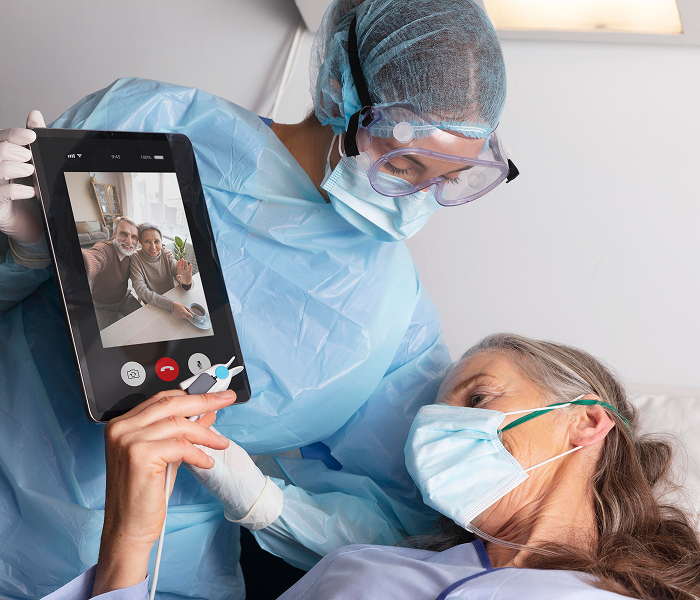

24/7 Emergency & Trauma Unit
A round-the-clock emergency department equipped for trauma, cardiac events, accidents, and sudden medical needs, backed by quick-response doctors and trained emergency nurses.
HSR Layout has quickly become one of Bengaluru’s most active residential and tech-work hubs. With young families, working professionals, senior citizens, and a rising start-up population, access to trusted multispecialty hospitals near HSR Layout has become essential — not just for emergencies, but for everyday wellness.
While searching for reliable hospitals in HSR Layout Bangalore, patients often look for:
A hospital that’s close enough to reach fast — yet advanced enough to treat confidently.
Aarogya Hastha Hospital has achieved great heights as a premier healthcare destination, recognized as the best private hospital in HSR Layout and the most trusted hospital in HSR Layout. We are committed to providing exceptional medical care with compassion, expertise, and cutting-edge technology.

Daily specialist consultations across major departments
24/7 emergency & critical care with ambulance support
Modern diagnostics (CT, digital X-ray, ultrasound, laboratory)
NICU & paediatric emergency services
Minimally invasive & advanced surgical care
Strong rehabilitation & physiotherapy support
Patient-first communication & ethical guidance
A hospital designed for everyday healthcare as well as complex medical needs.
Our skilled teams provide coordinated care across specialties, making us the best private hospital in HSR Layout:
| Department | Key Focus |
|---|---|
| Cardiology | Preventive heart checks, echo, TMT, ECG, hypertension, emergency cardiac care |
| Orthopaedics & Sports Medicine | Poly trauma, arthroscopy, sports injuries, joint replacement, arthritis |
| Paediatrics & Neonatology | Routine child care, vaccinations, childhood illnesses, NICU support, pediatric surgery |
| ENT | Hearing issues, sinus care, ear infections, tonsils, headache & vertigo care |
| Gynecology & Women’s Health | PCOS, antenatal care, fertility evaluation, high-risk pregnancy support, diagnostic laparoscopy |
| General Medicine | Fever, diabetes, thyroid, BP, lifestyle health management |
| Gastroenterology | Abdominal pain, indigestion, liver disorders, endoscopy guidance |
| Dermatology | Skin issues, allergies, medical dermatology |
| Urology & Nephrology | Kidney and urinary problems, urinary stones, UTIs |
| Emergency & Trauma Care | Accidents, falls, acute illness, stroke response |
| Neurology and Neurosurgery | Epilepsy, dementia, EEG, NCV, cerebral palsy, cranial spinal care, tumors |
| Physiotherapy | Post-surgery rehab, injury recovery, mobility support Need to add other departments those are missing |
Need guidance? Our care coordination desk helps patients choose the right specialist based on symptoms and urgency.
Aarogya Hastha brings key medical services under one roof so patients don’t need to travel from clinic to clinic. Every department works in sync, making diagnosis and treatment smoother, faster and more reassuring for families.
With 500+ successful surgeries within a short period, Aarogya Hastha is home to some of the most trusted names in orthopedic care.

MBBS
MS Orthopaedics
10+ Years of Experience
OPD Timing: Monday to Friday, 11.30 am to 12.30 pm

MBBS
MS Orthopaedics
10+ Years of Experience
OPD Timing: Monday to Friday, 11.30 am to 12.30 pm

MBBS
MS Orthopaedics
10+ Years of Experience
OPD Timing: Monday to Friday, 11.30 am to 12.30 pm

MBBS
MS Orthopaedics
10+ Years of Experience
OPD Timing: Monday to Friday, 11.30 am to 12.30 pm
Before choosing a hospital near HSR Layout, consider:
Aarogya Hastha consistently meets these standards — which is why many patients choose it when comparing the best hospitals in HSR Layout.
Approx. travel time
HSR Layout Signal → Aarogya Hastha: ~10–15 minutes (traffic dependent)
Accessible from Sarjapur Road / Kasavanahalli main road
Need directions? Call our helpdesk for guidance or ambulance support.
I was admitted to Aarogya Hasta Hospital under the care of Dr. Hiranmayee Seshu for three days due to a fever, and I must say, the experience was excellent. The doctors and nurses were extremely helpful and always responsive, even to the smallest questions or concerns I had about my health.
I was particularly interested in the scanner in the room, it was quite interesting. When I scanned it, I could instantly access all the contact numbers and even the cafe menu. I tried it out, and it worked perfectly.
As a patient, it felt truly comforting to see that the hospital prioritizes patient-friendly and innovative solutions. It really made me feel valued and well cared for.
A heartfelt thank you to the entire team for making my stay so comfortable and reassuring!
-Sahana Ravi

Cashless insurance support
TPA helpdesk
Transparent billing
EMIs for select treatments (ask helpdesk)
Here is a quick peek into what our patients say:
Dr. Sanjog Sharma performed my abdominoplasty and the entire experience was smooth and reassuring. He explained everything patiently and truly cared about my comfort. Life-changing results!
I had a tummy tuck done by Dr. Sanjog Sharma, and I couldn’t be happier. He’s incredibly skilled, kind, and attentive. The results exceeded my expectations—finally feel confident again!
Dr. Sanjog Sharma is exceptional in cosmetic skincare expertise. His gentle approach and attention to detail make him a standout professional. Highly recommend!
If you or a loved one are experiencing persistent ear pain, hearing changes, chronic sinus symptoms, or voice problems, early evaluation improves results.
Do not miss out on the latest trends and advancements fuelling the digital marketing industry. Read our insightful blogs to keep a watch.
Aarogya Hastha is a conveniently located multispeciality hospital serving HSR Layout residents with comprehensive diagnostics, specialist consultations, and emergency care.
The hospital provides cardiology, diabetology, orthopaedics, ENT, paediatrics, and more. Check the hospital’s services page for the full list.
Yes. Emergency care is available round the clock, including ambulance support when required.
You can book online via the website, call the hospital helpline, or visit the reception desk to schedule a consultation.
Aarogya Hastha works with many leading insurers and offers cashless admissions depending on policy coverage. Confirm with the hospital’s insurance desk before admission.
Yes. The hospital offers pediatric and maternity services, supported by neonatology, antenatal care, and paediatric specialists.
Expect modern imaging, pathology labs, operation theatres, monitoring units, and rehab facilities that support both elective and emergency care.
By car, taxi, or ambulance. The hospital is close to Sarjapur Road and Kasavanahalli, main connectors from HSR Layout and surrounding areas.
Yes, post-treatment rehabilitation, physiotherapy, and recovery planning are part of the hospital’s care pathway.
Accessible location, multispeciality care, modern diagnostics, and a patient-first approach combine to make Aarogya Hastha a reliable choice for residents of HSR Layout. Accessible location, multispeciality care, modern diagnostics, and a patient-first approach combine to make Aarogya Hastha a reliable choice for residents of HSR Layout.